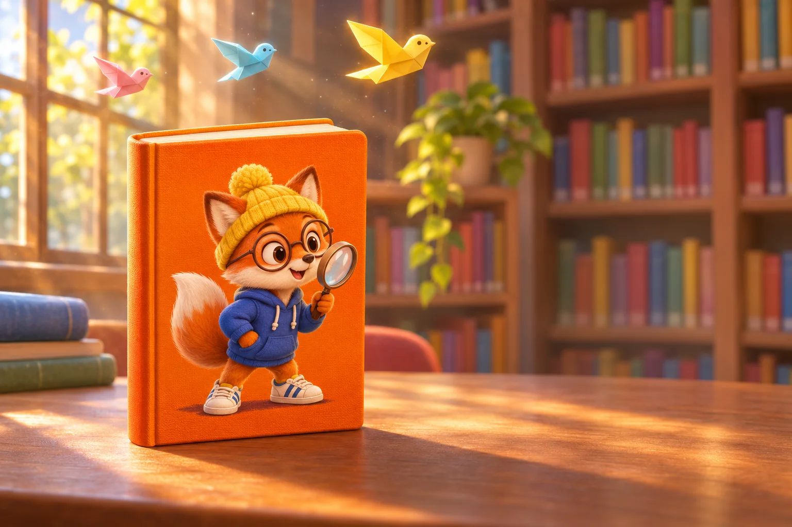

Adım 1 / 18
Turuncu kitapKuş mu, Top mu?
💧 0 / 20

🎒 Hazırlık · Okumadan önce
Kitaba bir bak!
 Bu bir soru değil, sadece bir tahmin. Doğru ya da yanlış cevap yok, puan da yok.
Bu bir soru değil, sadece bir tahmin. Doğru ya da yanlış cevap yok, puan da yok.
Sence bu turuncu kitap ne anlatıyor?
Güzel tahmin! Hadi okuyup bakalım.
1. Turuncu kitap
Perşembe, Duru’nun en sevdiği gündü.
Çünkü perşembe günleri sınıfça kütüphaneye giderlerdi.
Duru rafların arasında dolaşırken bir şey gördü.
En alt rafta küçük, turuncu bir kitap duruyordu.
Kapağında gözlüklü bir tilki ve bir soru vardı: “Kuş mu, top mu?”
Duru kitabı kütüphaneci Selin Hanım’dan hemen ödünç aldı.
1Kim? Nerede? Ne zaman?
Doğru resme dokun!
2Rafta Bul!
En alt rafta, kapağında gözlüklü tilki olan turuncu kitaba dokun.

Yönergeyi dikkatle oku. Üç ipucu var!
3Doğru mu, Yanlış mı?
Her cümleyi oku. Metinde öyle mi yazıyor?
4Yaz!
Kitabın kapağındaki hayvanın adını harflerle yaz.

Harflere dokun, kutulara yerleşsin.
Aferin! Adım 1 tamam!
0/ 20 damla 💧